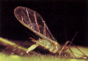
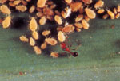
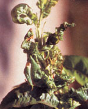

Here's the eleventh in a series of articles that will help you tell friend from foe in your garden.
Most gardeners would be quick to name aphids as the insects that give them the most trouble. Few other pests are as widespread, persistent, and downright annoying as these small, soft-bodied "plant lice."
Aphids constitute a large family (Aphididae) of the order Homoptera, a group which also includes the cicadas, leafhoppers, whiteflies, mealybugs, and scale insects. Like their kin, aphids feed on plant juices through a tubular proboscis, which is inserted, hypodermicstyle, into the plant's tissues. In addition to causing much physical damage, this method of feeding contributes to the transmission of many plant diseases, especially when the homopteran is winged and moves readily from plant to plant.
Aphids often blend in with the color of the host plant or hide on the underside of leaves, so the damage they inflict is usually the first clue to their presence. Curled, mottled leaves are-a sign that aphids (or similar insects) are at work. In time, infested plants become stunted and sickly, and a great deal of chlorophyll may be lost. Young, tender growth is often preferred by aphids, and the damage done in such instances can be devastating.
The typical aphid hardly needs description. It has a pear-shaped body one-tenth of an inch or less in length, is winged or wingless, possesses weak legs, and can be any of a number of colors. Although these sluggish insects may seem quite defenseless, they do possess one weapon. Protruding from the rear of the abdomen are two tubular structures, the cornicles, which secrete a waxy substance that deters at least some attackers.
When ants are observed moving up and down a plant or tree, it's almost a sure bet that aphids are present. Many of these pests excrete copious amounts of a sweet fluid called honeydew, which ants relish and readily gather up. In fact, an ant will even use its antennae to milk an aphid, rubbing the homopteran's abdomen in order to stimulate the flow of additional honeydew.
Indeed, many ants regularly milk their aphid herds and, in exchange for the sweet treat, provide their six-legged cattle with a certain degree of protection. The high sugar content of honeydew also provides an ideal growth medium for sooty mold, a black fungus that often develops on heavily infested vegetation. While this fungus does not attack the leaf, it eventually covers the surface and hampers many of the plant's vital functions.
One key to the enormous success of aphids is their amazing reproductive capacity, which is potentially higher than that of any other insect. It's estimated that a single aphid could have 5 billion descendants between spring and fall! Each female produces 50 to 100 offspring, and there may be over 40 generations annually in mild climates (and even more in greenhouses). Of course, a wide variety of predators, parasites, and pathogens keep the aphid population in check, but not always well enough to prevent damage to our plants.
I mentioned that a single aphid could have many progeny. Now, before you conclude that I don't know much about the birds and the bees, let me explain a fascinating aspect of aphid reproduction. Female aphids can give birth without mating-a fact that no doubt enhances their capacity to produce offspring! Known to scientists as parthenogenesis, this phenomenon results in a true virgin birth and in some respects is a natural cloning process. Parthenogenesis is also common in some scale insects and in many wasps.
In addition, aphids can give birth to living young, as well as laying eggs as most insects do. Actually, the process is somewhat different from the live birth of mammals in that the aphid merely incubates each egg within its body prior to giving birth.
Aphids live in densely packed colonies, and the seasonal life history of the society is often quite complex. While there are many variations, it typically proceeds something like this: In the spring, wingless female aphids hatch from eggs that were laid the previous fall. These insects reproduce asexually and give live birth for two or more generations on a specific host plant. In time, winged females appear, which migrate to a secondary host plant species, continuing their atypical reproductive habits. As summer comes to a close, succeeding generations migrate back to the original host plant species; only then do the males appear. Mating then takes place, and the resulting eggs pass the winter on the plant, thus completing the cycle.
There are many variations on this scenario, depending on which species is involved and on the climate of the area. In the mild southern regions, for example, males and eggs may not occur at all, since the hardy egg stage is unnecessary.
Once we become familiar with an enemy, we are in a much better position to battle it. Therefore, in the next issue, we'll be taking a look at some of the different types of aphids, and at various methods of controlling these vampires of the vegetable garden.
|
 A live, virgin birth of an aphid. Note the adult's proboscis penetrating the leaf on which it rests. |
 An ant with its herd of aphids. |
 Severely curled leaves damaged by aphids |